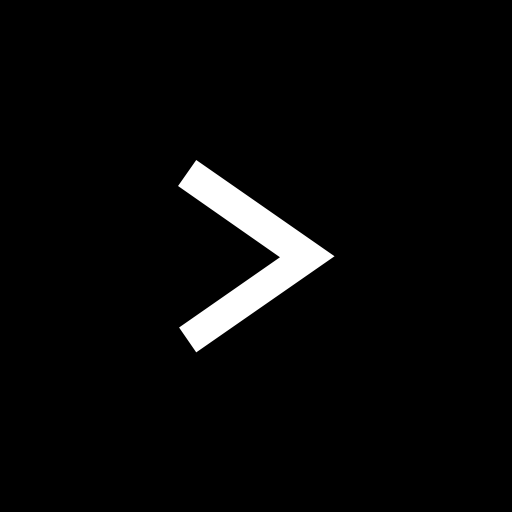

For class CS210
This project was created as a coursework task for University class CS210 - Computer Systems and Architecture. This was written in pure C (I know -_-) with implemented syscalls, which meant it would not work 100% on a normal machine as even running on administrator doesn't give you access to perform syscalls. Instead I had to SSH to the University Linux server which would allow for syscalls. I really enjoyed this project as it was a great learning experience and introduction to C. It is also really inspiring to see how real world applications that I use on a daily basis like windows powershell are implemented.
However the learning curve for this project was extremely steep. Starting out with basic user input and console output, to implementing cd, ls and other normal shell functions, to history saving and file reading. And unfortunately for me, my group was not willing to work. After 11 weeks of lofi powered coding sessions, the shell was complete.
Overall this was a difficult project as it was not only my first time coding in C, but also my first time using and understanding syscalls. The most difficult part of the project was actually readability, which is my own fault as I used notepad++ for this project which supplies minimal user quality of life tools. So I was probably scrolling through lines and lines of green text more than I was coding. I won't make the same mistake next time! Apart from silly mistakes I had a few coding struggles during the project.
Pointers. Pointers wasn't much of a problem during the first weeks of the project. However as I added more functionality, passing pointers as parameters, dereferencing pointers and array pointers slowly created more bugs. However through many youtube tutorials I was able to fix them all. I now see why people hate C so much and will stick to JavaScript :)
The code to the shell can be found here